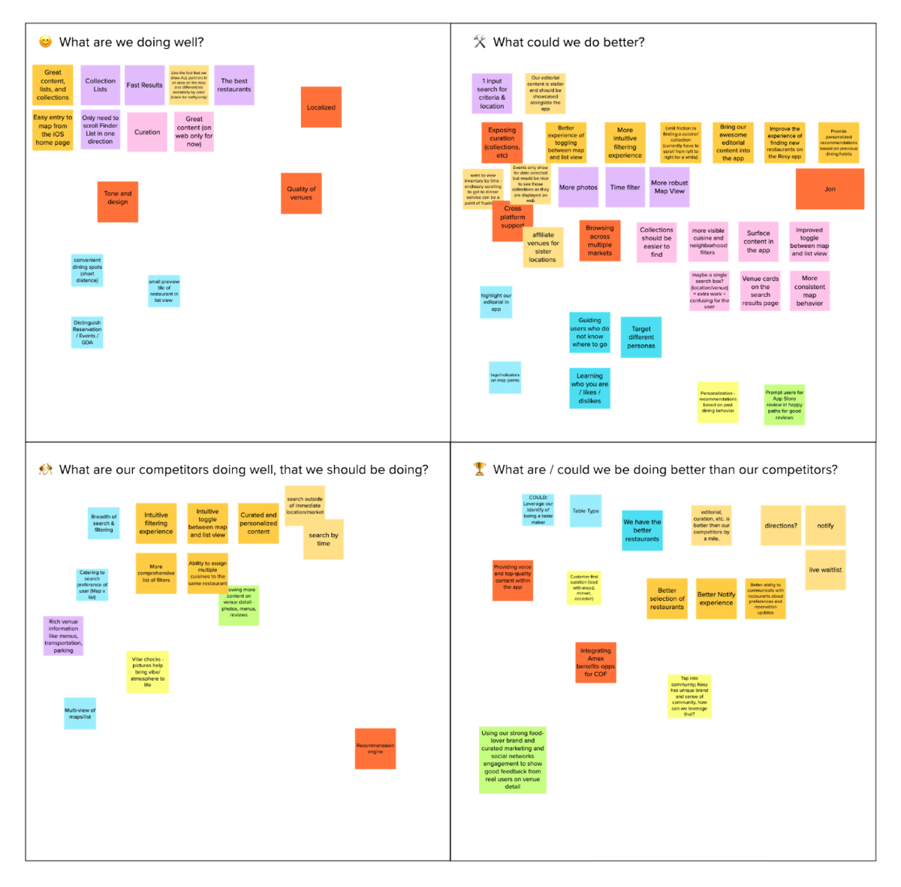
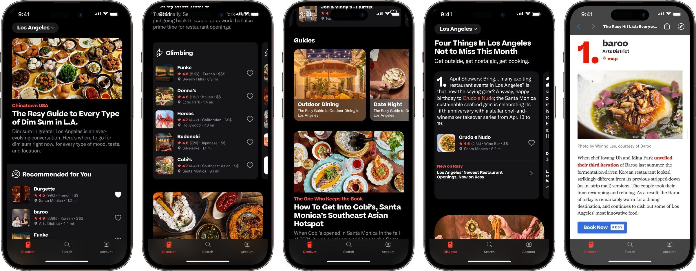

Coming out of the pandemic, Resy saw steady growth on both sides of the marketplace. As new restaurants joined the platform, diner growth followed organically. But that momentum exposed the limits of a product originally designed a decade earlier for about 50 restaurants in New York City.
The app now had to help people navigate more than 10,000 venues around the world, and for many diners, that abundance started to feel overwhelming.
The Opportunity
Our research kept telling us that most diners arrived with a restaurant already in mind. They searched by name, went straight to the venue page, and booked. Restaurant discovery and validation were happening elsewhere, on Google Maps, Instagram, TikTok, and many other places. We had already spent a great deal of effort optimizing the booking flow, but it was increasingly important to step back up the funnel and focus on earlier parts of the journey.
So we asked ourselves, how do we get diners to come to us first for that next great meal? How do we better meet their needs and expectations earlier in the process? And how do we demonstrate that value clearly enough that they keep coming back?
Editorial features, lists, and guides had been core to the Resy brand since its founding. Research showed that diners liked and engaged with this content, but it largely lived on web and social, not in the app. As a result, many app users did not see Resy as a trusted source for dining news and recommendations, if they were aware that side of the brand existed at all.
My early design explorations took an obvious path and borrowed the Resy web strategy, a handful of timely article promos above restaurant collections, full of blue booking buttons and pickers. As I iterated and gathered internal and user testing feedback, it became clear this approach was too muddled for diners at this stage of their journey.
I needed to better understand what diners needed in that moment and find the right balance to serve their needs.

Navigation & Architecture
Up to this point, the Resy app was, at heart, a simple list of restaurants sorted by distance from the diner’s phone. No fancy algorithms and very few filters. Before we could layer in discovery, we needed to modernize that foundation and give the new content somewhere to live.
Apple’s HIG, at least when this work began, advised against a catch-all home page: a long-scrolling view with lots of different modules and content formats.
“Home becomes the tab where every feature is fighting for real estate, because the tab is trying to solve a problem of discoverability. But in reality, it creates a dissociation between understanding content and how to act on it.”
— Sarah McClanahan, Designer on the Apple Evangelism team, at WWDC 2022.
The impulse to pile everything into one long view is understandable, because you worry that anything tucked behind another tap will never be found. But a stack of unrelated modules puts a real cognitive load on the user, especially on a phone.
By separating functions and user intents across tabs, we help users understand the app’s hierarchy and functionality at a glance. Each tab communicates a distinct part of the product, and those sections should be meaningful and descriptive. Even without seeing the content, the navigation hints at what the app can do.
This shift in information architecture also enabled a more modern interaction model. Replacing layers of cumbersome navigation with a quicker, gestural, sheet-based approach let diners dip in and out of restaurants while keeping booking just a tap away.
Building on the Existing Editorial Stack
Resy already had a respected editorial voice through blog.resy.com, powered by WordPress, where the team published guides, interviews, curated lists, and city recommendations that reflected the brand’s point of view. The challenge was weaving that editorial perspective into the product experience.
Because the editorial system and web surface already existed, we could build on proven publishing workflows instead of creating a new CMS, content pipeline, or authoring model for the app. Rather than dropping users into the full website, we reframed editorial inside the in-app browser, stripping away global navigation, recirculation modules, and other web-specific chrome that distracted from the task at hand.
Most importantly, each story hooked directly into native Venue sheets, where diners could browse the restaurant, save it to a list, or continue into the native app booking flow.
Early Signals
This was the largest user-facing change to the consumer app since its inception and diners responded immediately. Monthly active usage, booking conversion, and session duration all increased after launch, and app engagement reached an all-time high.
The new content generated millions of interactions in its first months, and more of that discovery ended in a reservation instead of a detour to another app.
Shortly after launch, we implemented Apple’s Universal Links, so Resy pages tapped from Google Search or social media opened directly in the app instead of the mobile website. Diners who opened those pages in the app booked at a higher rate than they had on the web, reinforcing what we had seen throughout the project. The fewer steps between discovery and reservation, the more often diners booked.
Key outcome metrics
+20%
MAU
+14%
Booking Conversion
+17%
Avg. Session Duration

Evolving the Experience After Launch
The launch validated the direction, but watching people use the feature told a more nuanced story. Simply bringing existing editorial into the app wasn’t enough to make Resy a more habitual starting point than Instagram or Google Maps.
We found that articles and lists could inspire, but they weren’t always the right format for the way people use their phones: quickly, one-handed, and often while deciding where to eat. Instead, many diners wanted fast validation and just enough context to feel confident, a sharp recommendation with a clear path to book.
That led me to add a more bite-sized format to the editorial toolkit. “Not to Miss” distilled long-form editorial into a swipeable series of recommendations, each centered on a single restaurant and connected directly to a native Venue sheet.
A diner could flip through a stack of recommendations one-handed while walking to the train, and book the moment something caught their eye.